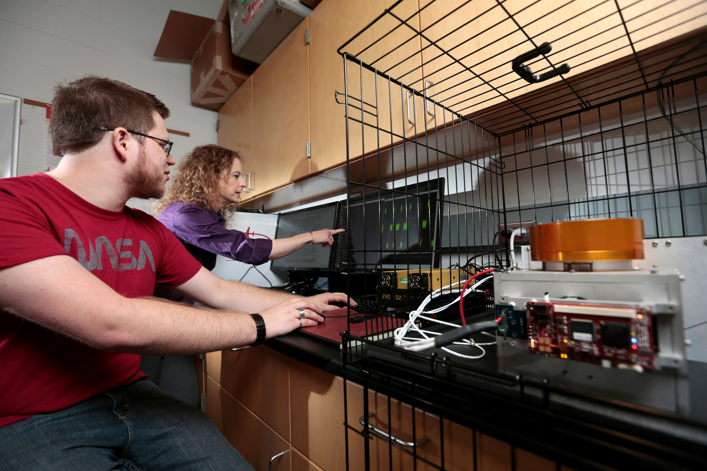
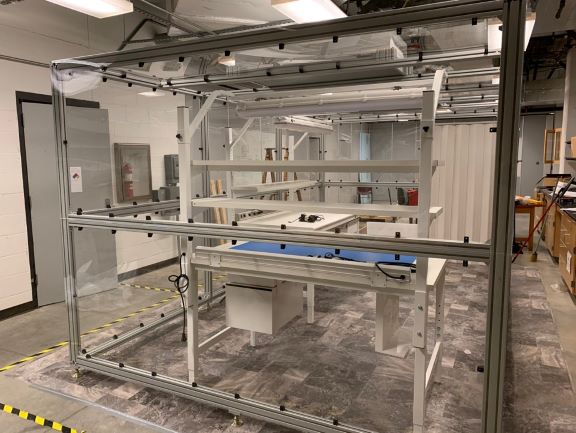
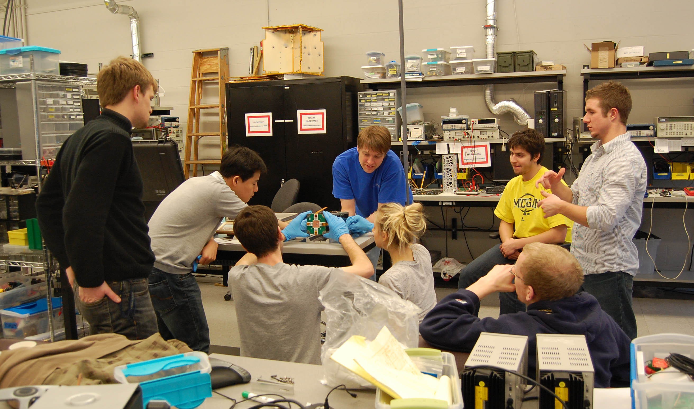

Elucidation and Analysis of Specification Patterns
in Aerospace System Telemetry
Zachary Luppen, Michael Jacks, Nathan Baughman, Muhamed Stilic, Ryan Nasers, Benjamin Hertz, James Cutler, Dae-Young Lee, and Kristin Yvonne Rozier
This webpage contains research artifacts from "Elucidation and Analysis of Specification Patterns
in Aerospace System
Telemetry" by Z. Luppen, M. Jacks, N. Baughman, M. Stilic, R. Nasers, B. Hertz, J. W. Cutler, D. Y. Lee, K. Y. Rozier
Lab Environment
The work in this manuscript is a collaboration between three separate lab spaces, two led by Dr. Kristin Yvonne Rozier and Dr. Dae Young Lee at Iowa State University and one led by Dr. James Cutler at the University of Michigan. Here we share brief descriptions of each lab.
The Laboratory for Temporal Logic (LTL), led by Dr. Kristin Yvonne Rozier, is located in the basement of Howe Hall, a $50 million state-of-the art facility in the College of Engineering. The laboratory has desktop workstations for research work by students, which provide dedicated connections to the university's network as well as other software including licensed software packages. The laboratory contains an extensive indoor flight test space, complete with a 3D printer, soldering stations, hotwire cutter, and all tools necessary for building, testing, and configuring various embedded systems. The lab is outfitted with an OptiTrack motion capture system with 20 cameras on two levels of surrounding rails, capable of thoroughly documenting experiments on any moving systems from robots to rovers to swarms of UAS. For more information about the LTL, go to: laboratory.temporallogic.org.

The Cardinal Space Laboratory (CSL), led by Dr. Dae Young Lee, is located in the basement of Howe Hall. The lab contains multiple computer stations and electronic workbenches for both undergraduate and graduate students. It also features electronics workbenches for assembly and testing of circuit boards and other electronic parts, as well as a class 100,000 cleanroom for fabrication and testing of high-quality spacecraft instrumentation. The cleanroom, built during Summer 2019 by undergraduate student, is used mainly to support CubeSat missions.

The Michigan eXploration Lab (MXL), led by Dr. James Cutler, is located at the University of Michigan. The Michigan Exploration Laboratory (MXL) works to achieve a comprehensive blend of education, research, and entrepreneurship within the University of Michigan College of Engineering. The collaborative MXL environment has already yielded flight-proven achievements in high altitude ballooning and small satellite design, with even more innovations resulting from the analysis of completed missions. For more information about the MXL, go to: engin.umich.edu.
